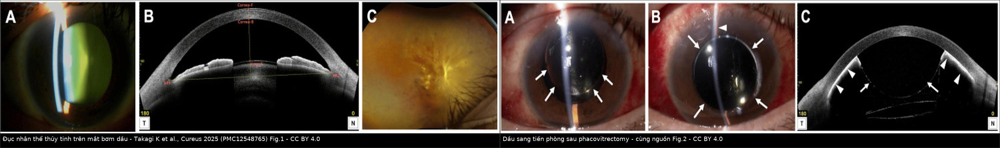
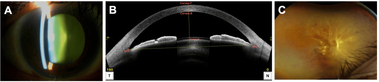
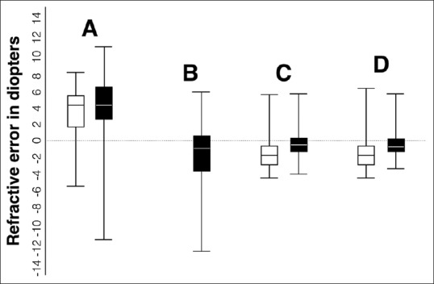

1863 — Đục thể thủy tinh ở mắt bơm dầu silicone: một thì hay hai thì / Cataract in the silicone oil-filled eye
Tags: pattern:duc-the-thuy-tinh pattern:duc-nhan pattern:duc-duoi-bao-sau pattern:lech-khuc-xa pattern:duc-sau-cat-dich-kinh vung:the-thuy-tinh vung:mat vung:tien-phong vung:dich-kinh protocol:slit-lamp protocol:sinh-trac-giac-mac protocol:AS-OCT protocol:phaco protocol:PPV protocol:cong-thuc-IOL score:SRK-T score:Kane
Mức chắc chắn (certainty): tổng hợp y văn (literature synthesis) — nhóm tự biên từ các nguồn mở, đã đối chiếu authorString/PMCID: tổng quan dầu silicone và khúc xạ (CC BY 4.0, PMC13635028), so sánh một thì–hai thì 272 mắt (CC BY-NC 4.0, PMC13221386), 135 mắt một thì–hai thì với siêu âm (CC BY-NC-SA 4.0, PMC6498926), phân tích gộp công thức IOL 1.060 mắt (CC BY-NC 4.0, PMC13155740), 64 mắt lấy dầu qua đồng tử vs 3 port (CC BY 4.0, PMC6094553), 42 mắt phaco + lấy dầu đồng thời (CC BY 4.0, PMC13338752), 561 mắt đục thể thủy tinh sau PPV (CC BY-NC-ND 4.0, PMC12980855), ca dầu tiền phòng sau phacovitrectomy (CC BY 4.0, PMC12548765), giọt dầu nhũ tương (CC BY-NC 4.0, PMC12271025), loạn thị sau mổ kết hợp 89 mắt (CC BY 4.0, PMC10322570). Chỗ nhóm suy luận được ghi rõ "suy luận".
Vì sao bài này quan trọng: bài 1410 dạy nhận diện dầu tồn lưu và khi nào lấy dầu, bài 1837 dạy dầu ở tiền phòng phá nội mô, bài 1416 dạy glôcôm do dầu. Nhưng câu hỏi thường gặp nhất ở phòng khám là: mắt đang bơm dầu bị đục thể thủy tinh — mổ phaco lúc nào, lấy dầu cùng lúc hay để sau, và tại sao khúc xạ lại "trật" dù công thức đúng? Đục thể thủy tinh xuất hiện ở tới 80% mắt còn thể thủy tinh trong vòng 2 năm sau cắt dịch kính; bỏ qua giai đoạn này là mất luôn cửa sổ theo dõi đáy mắt, còn chọn sai thứ tự mổ là mổ lại lần hai hoặc sai khúc xạ 1–4 D.
1. Tổng quan bệnh học – cơ chế hình ảnh: vì sao mắt bơm dầu vừa đục nhanh vừa lệch khúc xạ
- Bệnh học: sau cắt dịch kính (PPV), áp lực oxy trong khoang dịch kính tăng (dịch thay bằng dịch nội nhãn có oxy cao hơn) → đục nhân xơ (nuclear sclerosis) tiến triển nhanh; dầu silicone tiếp xúc thể thủy tinh và tình trạng viêm sau mổ đẩy nhanh đục dưới bao sau (PSC). Vì vậy đục nhân là loại hay gặp nhất sau PPV, còn PSC tiến triển gắn với bơm dầu (63,6%), võng mạc đái tháo đường tăng sinh (67,6%) và PCV (64,3%) (PMC12980855).
- Vật lý — TẠI SAO khúc xạ lệch (bắt buộc giải thích): dầu silicone chuẩn (polydimethylsiloxane) có chiết suất n = 1,404, cao hơn dịch kính/dịch tiền phòng n ≈ 1,336, tỷ trọng 0,97 và độ nhớt 1.000–5.000 cSt (dầu nặng như Oxane 5700 có tỷ trọng 1,02) (PMC13635028, Bảng 1). Ba hệ quả:
- Khi còn dầu: môi trường sau thể thủy tinh/IOL có chiết suất cao hơn → công suất khúc xạ hiệu dụng đổi, mắt thường lệch về phía viễn thị so với dự kiến (điển hình ở mắt dài).
- Sau khi lấy dầu: môi trường trở về nước → mắt lệch về phía cận thị; loạt 135 mắt ghi nhận cận thị −4,18 ± 5,47 D ở 92% mắt tại tháng 3 sau lấy dầu + phaco (PMC6498926).
- Sinh trắc học sai: siêu âm có vận tốc truyền trong dầu thấp hơn nhiều so với dịch kính → chiều dài trục (AL) bị đo dài hơn thực; siêu âm quang học (SS-OCT, IOLMaster 700) cũng đo dài hơn trung bình ≈ 0,12 mm trong mắt đầy dầu, gây viễn thị bất ngờ, nhất là mắt > 25 mm. Hiệu chỉnh AL theo công thức Zhang đưa sai số về gần 0 và cải thiện dự đoán ≈ 0,3 D ở mắt dài (PMC13635028).
- TẠI SAO dầu làm mổ khó hơn: dầu nhẹ hơn nước nên nổi lên trên, dễ trào vào tiền phòng khi mở nhãn cầu, che mặt sau IOL và bám nội mô; dầu nhũ tương hóa thành giọt nhỏ (< 1 µm tới vài chục µm) nhìn như tế bào viêm trong tiền phòng hoặc như "màng" trên vỏ bao sau.
- Ngưỡng định lượng (theo
PROMPT_SYNTHESIZER.md):- Đục thể thủy tinh sau PPV: tới 80% mắt còn thể thủy tinh trong 2 năm (PMC13635028); PSC tiến triển 63,6% ở nhóm bơm dầu, tuổi cắt 54,5 là ngưỡng nguy cơ cao (PMC12980855).
- Một thì (phaco + IOL + lấy dầu) vs hai thì (lấy dầu trước, phaco sau), 272 mắt: sai số dự đoán trung vị −0,26 D (hai thì) vs +0,21 D (một thì), p = 0,008; MAE tương đương; phù hoàng điểm 23% vs 3%; glôcôm/tăng nhãn áp 23% vs 7% (p = 0,013); thị lực cuối 0,53 vs 0,71 logMAR (p = 0,064) (PMC13221386).
- Công thức IOL trong mắt đầy dầu (7 nghiên cứu, 1.060 mắt): Kane tốt nhất cho tỉ lệ trong ± 0,50 D (SUCRA 90,9%), EVO tốt nhất cho ± 1,00 D (82,8%) (PMC13155740).
- An toàn võng mạc khi mổ kết hợp: bong võng mạc tái phát 2,4% (1/42) trong 42 mắt phaco + lấy dầu đồng thời (PMC13338752); 15,8% (đường qua đồng tử) vs 4,4% (3 port) trong 64 mắt, p = 0,14; dầu tồn lưu 7,4 ± 3,2% vs 7,1 ± 2,8% (PMC6094553).
- Loạn thị giác mạc tăng ngắn hạn sau mổ kết hợp rồi giảm dần tới tháng 1; AL giảm ở mọi mốc theo dõi (89 mắt, PMC10322570).
- Thời điểm lấy dầu: nhiều trung tâm lên kế hoạch 3–6 tháng, cá thể hóa theo độ ổn định võng mạc, nhãn áp và dầu di trú ra trước (PMC13635028).
2. Mẫu hình + chẩn đoán phân biệt theo thời điểm (Gamut)
- Mẫu hình lõi: mắt đã PPV ± bơm dầu, thị lực giảm dần không đau, đèn khe thấy nhân vàng/đục nhân hoặc đục dưới bao sau, ánh đồng tử (red reflex) mờ, có thể thấy màng dầu/giọt dầu phía sau thể thủy tinh.
- Gamut theo thời điểm so với lần mổ dầu:
- Đục tiến triển trong khi còn dầu (phổ biến nhất) → cân nhắc một thì hoặc phaco khi còn dầu.
- Đục sau khi đã lấy dầu, mắt không còn tamponade → phaco đơn thuần, sinh trắc học đáng tin hơn.
- Đục ngay từ lần PPV đầu (mắt > 50 tuổi, đục sẵn) → phacovitrectomy đồng thời để tránh mổ lần hai (PMC13635028).
- Đục + bệnh võng mạc tiến triển (PVR, bong dưới, tái phát) → giữ dầu, mổ thể thủy tinh trước, lấy dầu sau.
- Đục giả do dầu — giọt dầu nhũ tương hoặc màng dầu sau IOL làm mờ trục quang, thể thủy tinh có thể còn trong; đừng mổ oan.
- Mẫu hình hình ảnh:
- Đèn khe: đục nhân (vàng, mất phản xạ đỏ), PSC (mảng trắng sau bao), dầu trong tiền phòng (mức dầu/váng dầu, giọt lấp lánh).
- AS-OCT: độ sâu tiền phòng, dầu trong tiền phòng (dải phản xạ mặt sau giác mạc), IOL nghiêng/lệch.
- Siêu âm B: đánh giá võng mạc khi mờ; giọt dầu nhũ tương tăng phản xạ do tán xạ Rayleigh, không phải máu/viêm (PMC12271025).
3. Bảng so sánh phân biệt (ma trận đối chiếu)
| Thực thể (entity) | Hình ảnh / đặc điểm điển hình | Chốt vào (rule-in) | Chốt loại (rule-out) | Gợi ý xác nhận |
|---|---|---|---|---|
| Một thì: phaco + IOL + lấy dầu | Đục nhân/PSC + võng mạc áp, ổn định, dầu không còn cần thiết | Võng mạc áp ≥ 3 tháng, IOP kiểm soát, không PVR tiến triển + bệnh nhân muốn một lần mổ; bong tái phát 2,4–15,8% tùy đường lấy dầu | Võng mạc chưa ổn định/bong dưới/PVR + cần tamponade tiếp → không một thì | Siêu âm B/đáy mắt gián tiếp trước mổ; kế hoạch lấy dầu 3 port nếu nguy cơ cao |
| Hai thì: lấy dầu trước, phaco sau | Mắt không còn dầu khi tính IOL → sinh trắc học sạch | Cần lấy dầu vì lý do khác (nhũ tương, IOP, keratopathy) trước khi thể thủy tinh đục nhiều, hoặc ưu tiên độ chính xác khúc xạ: sai số trung vị −0,26 D so với +0,21 D ở một thì (p = 0,008) | Bệnh nhân không chấp nhận 2 lần mổ/không theo dõi được → cân nhắc một thì | Đo lại AL sau khi hết dầu bằng SS-OCT; công thức Kane/EVO |
| Phaco khi CÒN dầu (giữ dầu), lấy dầu sau | Đục thể thủy tinh nhưng võng mạc còn cần dầu (bong dưới, PVR, mắt đã nhiều lần mổ) | Cần tamponade tiếp + trục quang bị đục cản theo dõi; mổ thể thủy tinh để nhìn đáy mắt | Võng mạc đã ổn định, không còn chỉ định dầu → lấy dầu luôn sẽ tốt hơn | Siêu âm B, đáy mắt; dùng AL hiệu chỉnh Zhang, công thức Kane/EVO; dự phòng dầu vào tiền phòng |
| Phacovitrectomy ngay từ đầu | Mắt > 50 tuổi, đục sẵn hoặc nguy cơ đục cao, cần PPV | Tuổi > 50 + kế hoạch PPV + thể thủy tinh còn → mổ đồng thời để tránh lần hai | Trẻ, thể thủy tinh trong, PPV đơn giản → có thể để lại và theo dõi | Đèn khe trước mổ; tư vấn nguy cơ đục 80%/2 năm |
| Đục thể thủy tinh sau PPV KHÔNG dầu | Đục nhân tiến triển chậm hơn; PSC ít hơn so với nhóm dầu | Tiền sử PPV + không dầu + đục nhân/PSC | Có dầu + mờ trục quang do giọt dầu → không phải đục thật | Đèn khe + AS-OCT; siêu âm B |
| Đục giả do dầu/nhũ tương dầu | Giọt lấp lánh trong tiền phòng/dịch kính, "tế bào giả" không dính góc, màng dầu sau IOL | Tiền sử bơm dầu + giọt tăng phản xạ trên siêu âm (Rayleigh) + không viêm thật | Tyndall thật + dính sau đồng tử + đau → viêm nội nhãn/viêm màng bồ đào | Siêu âm B, AS-OCT, đáp ứng với rửa dầu/PFCL |

Trái: (A) đèn khe — đục nhân vàng, mất phản xạ đỏ; (B) AS-OCT — tiền phòng và mặt trước thể thủy tinh; (C) đáy mắt. Phải: dầu silicone trong tiền phòng (mũi tên) sau phacovitrectomy — biến chứng cần nhận diện trước khi quyết định mổ thể thủy tinh. Nguồn: Takagi K et al., Cureus 2025 (PMC12548765), Fig. 1 + Fig. 2, CC BY 4.0. Ảnh ghép letterbox, không crop.4. Protocol chụp, tính IOL và quyết định một thì/hai thì
- Trước mổ — bắt buộc:
- Đèn khe + giãn đồng tử: xác định loại đục (nhân/PSC/hỗn hợp), dầu trong tiền phòng, tình trạng bao sau, IOL cũ.
- Đáy mắt gián tiếp/siêu âm B: võng mạc áp hay không, PVR, bong dưới — đây là biến số quyết định một thì hay giữ dầu.
- Sinh trắc học: ưu tiên SS-OCT; nếu còn dầu, ghi rõ AL đo trong dầu và hiệu chỉnh Zhang (giảm sai số về gần 0, cải thiện ≈ 0,3 D ở mắt > 25 mm) (PMC13635028).
- Công thức IOL: Kane cho mục tiêu ± 0,50 D; EVO cho ± 1,00 D; RBF cũng tốt (PMC13155740). Không dùng SRK/T đơn thuần ở mắt đầy dầu nếu có lựa chọn khác.
- Trong mổ (một thì): phaco qua đường rạch nhỏ, duy trì tiền phòng bằng viscoelastic để chặn dầu trào; lấy dầu qua 3 port thay vì qua đồng tử nếu nguy cơ bong cao (bong 4,4% vs 15,8%, p = 0,14; PMC6094553); kiểm tra dầu tồn lưu (7,1–7,4%) và rửa sạch bằng PFCL nếu cần.
- Phân tầng quyết định (flowchart):
flowchart TD
A[Mắt đục thể thủy tinh đã PPV + dầu] --> B{Võng mạc áp và ổn định ≥ 3 tháng?}
B -->|Không| C[Giữ dầu: phaco + IOL khi còn dầu]
C --> D[Lấy dầu sau khi võng mạc ổn định]
B -->|Có| E{Còn chỉ định tamponade?}
E -->|Không| F{Muốn tối ưu khúc xạ hay một lần mổ?}
F -->|Khúc xạ| G[Hai thì: lấy dầu trước → phaco sau]
F -->|Một lần mổ| H[Một thì: phaco + IOL + lấy dầu]
E -->|Có| C
H --> I[AL hiệu chỉnh Zhang + Kane/EVO; dự phòng dầu tiền phòng]
G --> J[Đo lại AL sau hết dầu + Kane/EVO]
- Theo dõi sau mổ: ngày 1 kiểm dầu tiền phòng, IOP, phù giác mạc; tuần 1–4 đo lại khúc xạ (loạn thị tăng ngắn hạn rồi giảm — PMC10322570); tháng 1–3 đánh giá võng mạc tái bong, phù hoàng điểm (23% ở nhóm hai thì vs 3% ở một thì trong loạt Bascom Palmer — PMC13221386).
5. Biến thể bình thường và cạm bẫy
- "Đục thể thủy tinh" có thể chỉ là dầu: giọt dầu nhũ tương trong tiền phòng/dịch kính lấp lánh, không dính góc, không Tyndall thật; trên siêu âm B chúng tăng phản xạ do tán xạ Rayleigh (PMC12271025) — đừng chẩn đoán viêm nội nhãn hay mổ phaco oan.
- Dầu trong tiền phòng sau phacovitrectomy: dấu hiệu mức dầu/váng dầu, có thể gây pupillary block và bám nội mô; nhận diện trên đèn khe/AS-OCT ngay ngày 1 (PMC12548765). Đây là lý do phải duy trì tiền phòng và kiểm tra góc trong mổ.
- Sai khúc xạ hai chiều: còn dầu → viễn thị (nhất là khi AL bị đo dài), sau lấy dầu → cận thị (−4,18 ± 5,47 D ở 92% mắt tại tháng 3 — PMC6498926). Tư vấn trước mổ rằng có thể phải đổi kính dù mổ "thành công".
- AL "bình thường" không có nghĩa là đúng: SS-OCT vẫn dài hơn 0,12 mm trong mắt đầy dầu; nếu không hiệu chỉnh, IOL non → viễn thị bất ngờ (PMC13635028).
- Đừng lấy dầu chỉ vì "đã đủ 3–6 tháng": thời điểm lấy dầu cá thể hóa theo độ ổn định võng mạc, IOP và dầu di trú; lấy sớm ở mắt còn PVR → bong tái phát.
- Phù hoàng điểm và tăng nhãn áp sau mổ kết hợp không hiếm (23% mỗi loại trong nhóm hai thì của một loạt) — theo dõi OCT và IOP, đừng quy hết cho "dầu còn sót".
6. Tự lượng giá — Blind Quiz
Ca 1 — Nam 60 tuổi, đã PPV + bơm dầu 8 tháng, thị lực giảm dần không đau. Đèn khe: ánh đồng tử mờ, nhân vàng.

- Gợi ý: võng mạc áp trên siêu âm B, IOP 16 mmHg, không PVR.
- Câu hỏi: Loại đục nào? Có nên mổ một thì không? Cần đo gì trước khi tính IOL?
Bấm để hiện đáp án (findings + chẩn đoán)
- Dấu hiệu: (A) đục nhân vàng, mất phản xạ đỏ; (B) AS-OCT — tiền phòng bình thường, mặt trước thể thủy tinh; (C) đáy mắt — võng mạc áp.
- Chẩn đoán: đục nhân trên mắt bơm dầu, võng mạc ổn định → có thể một thì (phaco + IOL + lấy dầu); trước mổ phải đo AL có hiệu chỉnh Zhang và chọn Kane/EVO, vì AL trong dầu bị đo dài ≈ 0,12 mm và dễ gây viễn thị.
- Nguồn: Takagi K et al., Cureus 2025 (PMC12548765), Fig. 1, CC BY 4.0.
Ca 2 — Ngày 1 sau phacovitrectomy, bệnh nhân đau nhẹ, tiền phòng nông, thấy lớp dầu phía sau giác mạc.

- Gợi ý: IOP 28 mmHg, giác mạc hơi mờ vùng trung tâm.
- Câu hỏi: Dấu hiệu chính? Hai biến chứng cần nghĩ? Xử trí đầu tay?
Bấm để hiện đáp án (findings + chẩn đoán)
- Dấu hiệu: dầu silicone trong tiền phòng (mũi tên) — lớp/váng dầu mặt sau giác mạc, AS-OCT thấy dải phản xạ; tiền phòng nông.
- Chẩn đoán: dầu trào tiền phòng gây pupillary block + nguy cơ bám nội mô. Xử trí: hạ nhãn áp, đẩy dầu ra sau bằng viscoelastic/khí, tạo iridotomy nếu tái diễn; theo dõi nội mô.
- Nguồn: Takagi K et al., Cureus 2025 (PMC12548765), Fig. 2, CC BY 4.0.
Ca 3 — Cùng một nhóm mắt theo thời gian: A = trước lấy dầu + phaco; B = ngay sau lấy dầu (nhóm hai thì); C = ngày 45; D = tháng 3. Trắng = nhóm một thì, đen = nhóm hai thì.

- Gợi ý: trục tung là sai số khúc xạ (D), dương = viễn thị; đường 0 = chính xác.
- Câu hỏi: Trước mổ (A) mắt lệch về phía nào? Sau khi lấy dầu + phaco (C, D) lệch về phía nào? Vì sao? Tư vấn trước mổ thay đổi thế nào?
Bấm để hiện đáp án (findings + chẩn đoán)
- Dấu hiệu: trước mổ (A) cả hai nhóm lệch dương ~+4 D (viễn thị khi còn dầu); sau lấy dầu + phaco (C, D) lệch âm (cận thị), rõ hơn ở nhóm một thì.
- Chẩn đoán: đảo chiều khúc xạ khi thay dầu bằng dịch — còn dầu thì viễn thị, lấy dầu thì cận thị; loạt này ghi cận thị −4,18 ± 5,47 D ở 92% mắt tại tháng 3, và hai thì cho khúc xạ dự đoán tốt hơn (−1,73 ± 2,04 vs −0,64 ± 1,75 D, p = 0,002). Tư vấn: giải thích trước khả năng phải đổi kính; nếu một thì, dùng AL hiệu chỉnh Zhang + Kane/EVO.
- Nguồn: Madanagopalan VG et al., Indian J Ophthalmol 2019 (PMC6498926), Fig. 1, CC BY-NC-SA 4.0.
Bài liên quan chéo
- 1837 – Dầu silicone trong tiền phòng & tổn thương nội mô giác mạc
- 1410 – Lấy dầu silicone & dầu tồn lưu
- 1416 – Glôcôm do dầu silicone
- 1417 – Giữ dầu silicone vĩnh viễn: khi nào chấp nhận
- 1432 – Thay dầu silicone: thiếu thể tích & nhũ tương hóa
- 1442 – Mảnh thể thủy tinh còn sót trong tiền phòng
- 1452 – Glôcôm do thể thủy tinh chưa mổ
Không dùng để chẩn đoán độc lập khi chưa có người hướng dẫn.